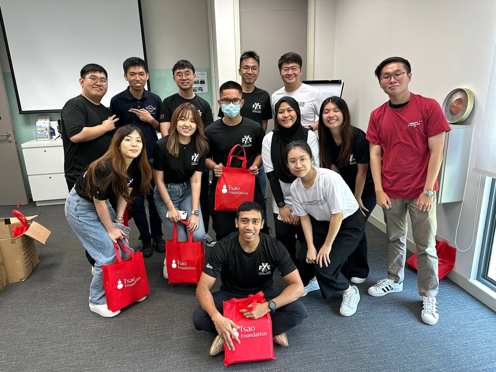

Being part of the Community Service Club has been one of the most meaningful aspects of my student journey. At Singapore Institute of Technology, I’ve actively participated in various volunteering initiatives, including events hosted by the TSAO Foundation and the Community for Successful Ageing (ComSA). These programs have given me the opportunity to engage with elderly communities, provide companionship, and contribute to initiatives that promote dignity and quality of life in ageing.
During my time at Nanyang Polytechnic, I was involved in befriending programmes for both elderly and children. These experiences included organising interactive sessions, distributing care packages, and participating in outreach events. I was also a regular participant in blood donation drives, recognising the importance of contributing to public health in simple but impactful ways.
Through community service, I’ve developed greater empathy, communication skills, and a deeper sense of social responsibility. It’s taught me that engineering solutions can go beyond technical problems — they can also serve people and improve lives.
